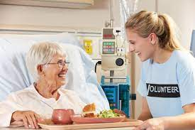

Melissa Torres
I am an undergraduate student at the University of California, Riverside who is majoring in biological sciences. I am a pre-medical student who is interested in becoming a Emergency Medicine physician in the future. During my undergrad years, I have gained numerous clinical expierences that have solidified my decison to go into medicine. I organized two weeks of shadowing experiences in Minneapolis for an immersion into United States’ health care. I contributed to public health projects in Jalapa including conducting public health surveys within schools and local communities and working alongside the Women’s Health Foundation to catalog local women’s health concerns. I observed clinical practices of United States’ and Nicaraguan health professionals in order to reflect on global health care issues and the health care system of Nicaragua. I also gained deeper understanding of holistic medicine and improved Spanish speaking skills in busy cross-cultural context. As far as research, I collaborated with local, state and national public health authorities in an epidemiological and molecular outbreak
investigation of the fungal disease, Blastomycosis, in several counties in Minnesota. I genetically typed fungal samples and paired results with exposure sites to identify possible outbreak sources. I also demonstrated spatial and temporal similarities in B. dermatidis genetic haplotypes by mapping case locations with GIS software. I presented preliminary findings to graduate school deans, principal investigators, and other students at poster symposium. As far as community involvemnet, I founded an organization to alleviate gross injustice of the treatment of house elves in the wizarding world. I lead group of 5 students in pin-making to raise awareness and funding for cause and held weekly meetings to discuss issues of elfish welfare and to plan events for greater campus community. I was a research assistant where I assisted in the examination of research related to gender roles in American and French film and theatre. I performed literature reviews on contemporary and historical research methodologies and findings in the field of gender studies and film analysis. I also was a research assistant in the chemistry department where did program and conduct experiments concerning protein binds and Human DNA polymerase. I analyzed data using MATLAB statistical software. I also assisted in developing literature reviews of pertinent research and select portions of manuscripts to be submitted
for peer review. I was also a hospice volunteer where I provided companionship to the patients. I assisted family members and caretakers with daily care including bathing patient and preparing meals.I also performed volunteering remotely during the COVID-19 pandemic. I was a clinical shadowing particpant wheere I observed patient histories and physical examinations. I also read and discussed research papers on genetic muscle disorders. I gained experience in the diagnostic process, genetic testing, and patient counseling. Through all these expierences, I was able to gain alot of knowlwdgee about the field of medicine. Every expierence I gained was extremely beneficial and helpeed me solididy my decison to go into medicine after my undergraduate years. With that being said, this is only the beeginning and there is far more I plan to expierence/accomplish.
Enter bio here
Enter bio here
Experience
Hospice Volunteer
• Developed websites for company X
• Speaker at hack-a-thons
• Experience with HTML, CSS, Javascript, Photoshop
Research Assistant
• Ran sessions to help students learn how to code
• Reviewed and graded student coding projects
• Created educational content to help promote student education
• TA'd for over 400 students each academic quarter
Education
UC Riverside
University of California Riverside
University of California Riverside
Portfolio
